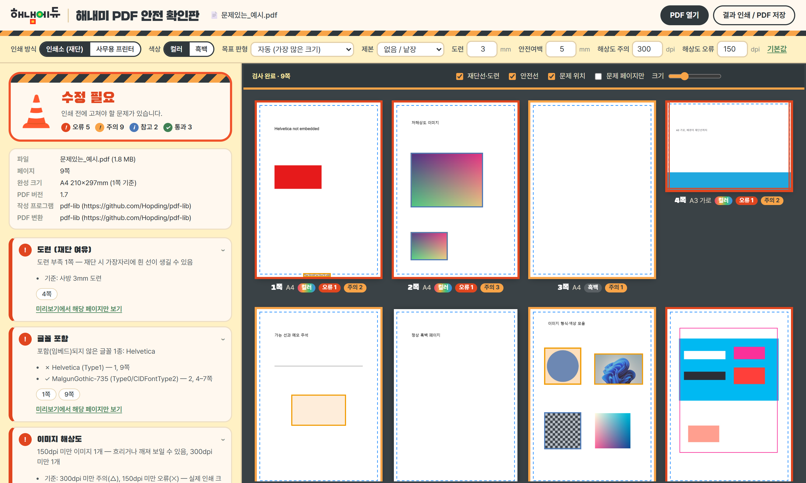
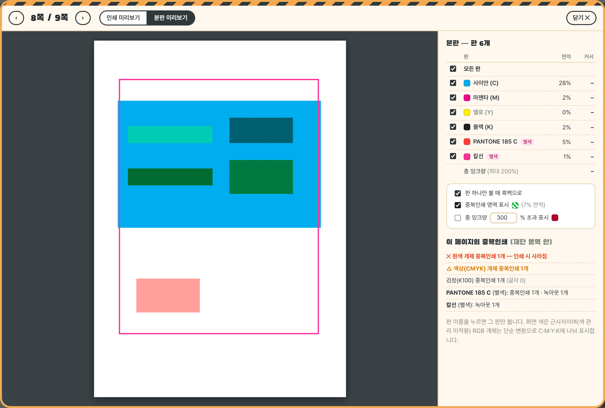

인쇄소에 넘기기 전 PDF를 넣으면 판형·도련·글꼴·이미지·색상·별색·중복인쇄 등을
자동으로 점검해 문제 항목과 위치를 한 화면에 보여 줍니다.
설치 필요 없음인터넷 없이 동작파일 외부 전송 없음
1시작하기
01프로그램 열기
해내미PDF안전확인판.html 더블클릭 (크롬·엣지)
02PDF 넣기
화면에 끌어다 놓거나 파일 선택 · PDF 열기
03기준 확인 → 결과 보기
자동으로 검사됩니다. 기준을 바꾸면 즉시 다시 판정.
2화면 보는 법

1 2 3 4 5 6- 1PDF 열기 · 결과 인쇄다른 파일 열기, 검사 결과 인쇄·PDF 저장
- 2검사 기준인쇄 방식·컬러/흑백·목표 판형·제본·도련·안전여백·해상도. 자동 저장, 기본값으로 복원
- 3종합 판정인쇄 가능 / 확인 필요 / 수정 필요와 개수
- 4검사 항목 목록심각한 순서로 정렬. 빨간 ✕ 줄을 누르면 그 페이지의 문제 위치로 바로 이동
- 5페이지 미리보기인쇄될 모습 그대로. 테두리 색 = 그 쪽의 상태, 누르면 크게 보기
- 6보기 옵션재단선·안전선·문제 위치 표시, 문제 페이지만, 크기
3결과 읽는 법
종합 판정


인쇄 가능발견된 문제가 없습니다.
확인 필요인쇄는 되지만 확인할 항목이 있어요.
수정 필요인쇄 전에 고쳐야 할 문제가 있어요.
항목 표시
- !오류 — 꼭 고쳐야 함
- !주의 — 의도했는지 확인
- i참고 — 정보
- ✓통과
미리보기
- 재단선·도련 — 실선 밖은 잘려 나감
- 안전선 — 글자는 이 안쪽에
- 문제 위치 — 항목 줄을 누르면 깜빡임
4페이지 상세 · 분판 미리보기

- 미리보기를 누르면 페이지 상세가 열립니다. ← → 넘기기, Esc 닫기
- 분판 미리보기 탭: C·M·Y·K·별색 판을 켜고 끄기, 판 이름을 누르면 그 판만 보기
- 커서를 올리면 그 지점의 판별 잉크 %와 총 잉크량 표시
- 중복인쇄 영역 표시 · 총 잉크량(기본 300%) 초과 표시
- 오른쪽에 이 페이지의 중복인쇄·별색 녹아웃 내역 표시
- 검사 목록의 별색 / 중복인쇄 줄을 누르면 해당 페이지 분판이 바로 열림
5검사 항목 한눈에
판형 · 방향목표 판형과 크기·가로세로·회전
페이지 수중철 제본이면 4의 배수인지
도련재단 여유(기본 3mm)까지 배경
안전여백재단선 가까이 붙은 글자·요소
글꼴 포함PDF에 포함되지 않은 글꼴
이미지 해상도유효 dpi (300 주의 / 150 오류)
이미지 색상 모드RGB · CMYK · 흑백 · 별색 이미지 구분
이미지 형식PNG 추정, 투명 배경, 16비트
글자·도형 색상RGB 사용, RGB 검정 글자
컬러 / 흑백 페이지흑백 인쇄인데 컬러가 섞인 쪽
별색목록, 중복인쇄·녹아웃, 칼선 녹아웃
중복인쇄흰색(사라짐)·색상·K100, 재단 영역 안만
빈 페이지내용이 없는 쪽
가는 선0.25pt보다 가는 선
투명도투명 효과 사용 여부
주석 · 레이어 · 보안메모·양식, 숨은 레이어, 암호·손상
결과 저장하기
- 결과 인쇄 / PDF 저장 → 인쇄 창 대상 ‘PDF로 저장’ → 검사 보고서 저장
알아 두세요
- 자동 검사는 보조 수단 — 최종 확인은 교정지·실제 출력물로 하세요.
- 분판 화면 색은 근사치이며, TrimBox가 없으면 크기로 재단선을 추정합니다.